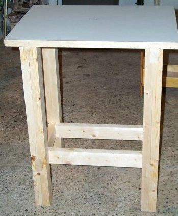
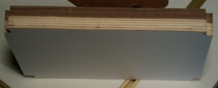
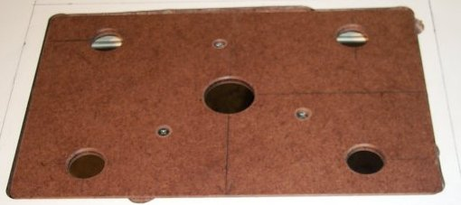
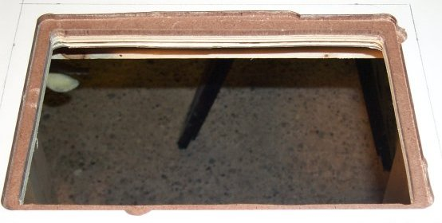
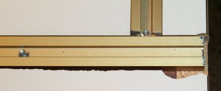
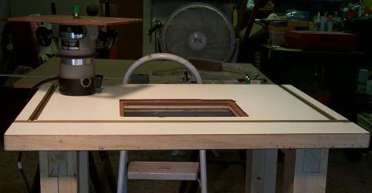

ThunderEagle's Nest

Ok, here is this bad boy. This is the Complete Router Table plans came from PlansNOW.com. These plans were first published in ShopNotes #1. I picked this table because it looked simple enough for me to build, sturdy, yet I can move it around as need be in my Garage Shop. I decided to forgo the fence in those plans and instead built the Router Table Fence from ShopNotes #69. In just materials, it looks like I have about $180.00 in this table. This doesn't count needing to buy some router bits, drill bits, a new hole saw, etc. I got nickel and dimed to death on fasteners of various kinds, but again, I'm just starting out, so that is to be expected I guess. What really shocked me was the price of the plastic knobs for all the fixtures.
Here is the completed base and top before I cut the insert out. This is one sturdy table. The top is composed of a piece of birch plywood (I just used the stuff from Home Depot, not Baltic Birch) laminated to two pieces of 1/4" Hardboard, then with hardwood edges added to that. I happened to have used a piece of clear pine I had around. It looks nice enough now, but I know it probably will get nicked up bad. That is ok, as we proceed you will see that I'll remake the table top at some point in time. Anyhow, then I added laminate to both sides of the top. Now we are ready to cut up this nice table top we just got done making.
This is the section I cut out for the insert so you can see a cross-section of what the table top looks like.
Now, the plans said to use double-sided tape to hold down guide strips to route out the insert lip. However, when I purchased said tape, I got what was available at the local Sears Hardware. This is not good stuff, as the guild boards slipped several times as I was attempting this as you can see here:

My plan was to just make a bigger insert plate to cover up my gouging, however when I was routing the grooves for my T-Track, I had another snafu.
Several things happened here. One, even with quick clamps on my guide board, it still moved over my laminated table. Second, my pattern bit at the time was a Viper bit that you buy at Home Depot. I haven't tried it since, but I think cutting through all the hardboard dulled it some, as it did a lot of grabbing as you can see in the picture to the left. The third problem was that the set screw to the stop collar on the pattern bit fell out. After really goobering up this groove is when I discovered that. Luckily (or unluckily for my wallet) I have discovered I live just about 10 miles south of Eagle America A.K.A. PriceCutter.com. They happen to run a little outlet store up there and are very helpful. All I have to do is walk in with a list of catalog numbers, they enter it in and in a few minutes they bring up my order. They also have several things on display, but if you know what you want, it is easier to just give them the catalog numbers.
I purchased my T-Track from Eagle America too, they claim it is pre-counter-sunk to accept #6 Flat Head wood screws. Bullshit, the counter-sink just isn't deep enough to not have your screw head stick up and the track is so narrow that you cannot get a counter sink bit down in there to make it deeper. Luckily the track fits pretty dang snug in a 3/4" routed dado. I did use some #4 FH screws to give it a little extra hold down though.
Here is the finished table:

I created a separate page for the Router Fence.